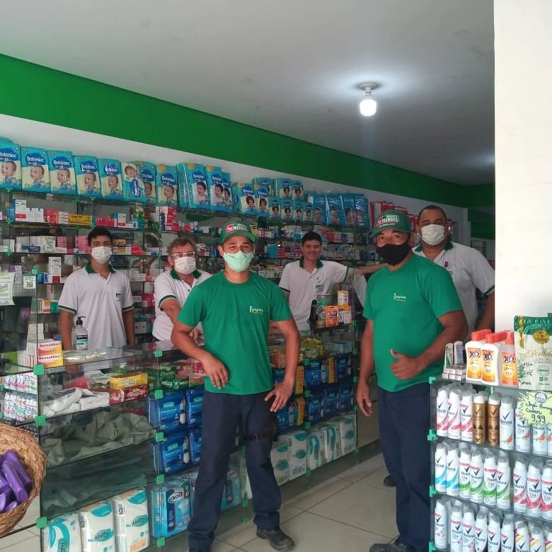
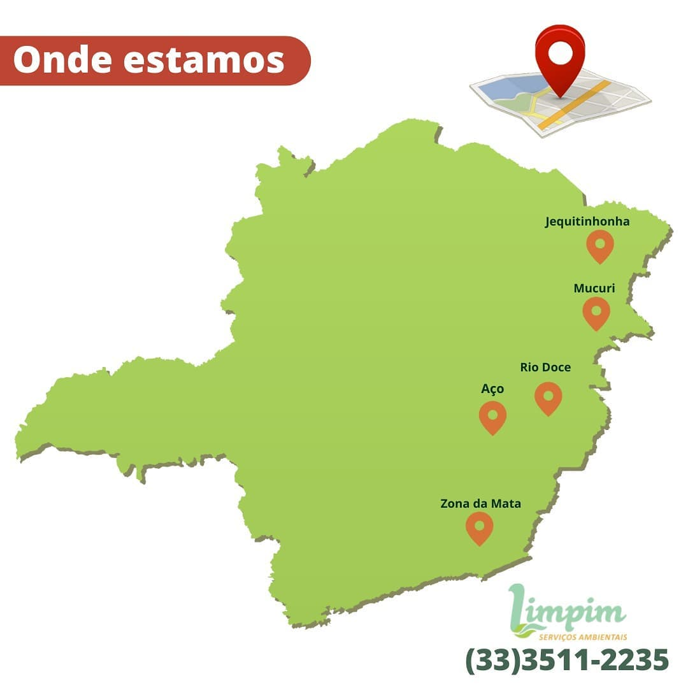

Conheça a nossa empresa
A Limpim Serviços Ambientais é uma empresa familiar que surgiu em 2017 para unir pessoas de diferentes funções para trabalhar no ramo de limpeza e conservação.
A empresa mudou para o setor de coleta de resíduos de saúde, atuando na região leste de minas. Com pouco tempo foi adqurindo reconhecimento na região e sendo contratada por prefeituras e empresas do segmento de saúde.
Somos uma empresa familiar, cuidando de outras famílias
A empresa hoje está estabelecida na região e cada vez mais conquistando a confiança dos nossos clientes. Atendemos nos Vales do Jequitinhonha, Valo do Aço, Vale do Mucuri e Zona da Mata.
